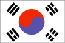

{kind=link}


![[Country map of Korea, South]](../maps/ks-map.jpg)
| Korea, South |  |
|
|
|
|
| Introduction |
Background: Following World War II, a republic was set up in the southern half of the Korean Peninsula while a communist government was installed in the north. Between 1950 and 1953, US and other UN forces intervened to defend South Korea from North Korean attacks supported by the Chinese; an armistice was signed in 1953. Thereafter, South Korea achieved amazing economic growth, with per capita income rising to 13 times the level of North Korea. In 1997, the nation suffered a severe financial crisis from which it continues to make a solid recovery. South Korea has also maintained its commitment to democratize its political processes.
| Geography |
Location: Eastern Asia, southern half of the Korean Peninsula bordering the Sea of Japan and the Yellow Sea
Geographic coordinates: 37 00 N, 127 30 E
Map references: Asia
Area:
total:
98,480 sq km
land:
98,190 sq km
water:
290 sq km
Area - comparative: slightly larger than Indiana
Land boundaries:
total:
238 km
border countries:
North Korea 238 km
Coastline: 2,413 km
Maritime claims:
contiguous zone:
24 nm
continental shelf:
not specified
exclusive economic zone:
200 nm
territorial sea:
12 nm; between 3 nm and 12 nm in the Korea Strait
Climate: temperate, with rainfall heavier in summer than winter
Terrain: mostly hills and mountains; wide coastal plains in west and south
Elevation extremes:
lowest point:
Sea of Japan 0 m
highest point:
Halla-san 1,950 m
Natural resources: coal, tungsten, graphite, molybdenum, lead, hydropower potential
Land use:
arable land:
19%
permanent crops:
2%
permanent pastures:
1%
forests and woodland:
65%
other:
13% (1993 est.)
Irrigated land: 13,350 sq km (1993 est.)
Natural hazards: occasional typhoons bring high winds and floods; low-level seismic activity common in southwest
Environment - current issues: air pollution in large cities; water pollution from the discharge of sewage and industrial effluents; drift net fishing
Environment - international agreements:
party to:
Antarctic-Environmental Protocol, Antarctic Treaty, Biodiversity, Climate Change, Desertification, Endangered Species, Environmental Modification, Hazardous Wastes, Law of the Sea, Marine Dumping, Nuclear Test Ban, Ozone Layer Protection, Ship Pollution, Tropical Timber 83, Tropical Timber 94, Wetlands, Whaling
signed, but not ratified:
Climate Change-Kyoto Protocol
| People |
Population: 47,470,969 (July 2000 est.)
Age structure:
0-14 years:
22% (male 5,471,520; female 4,867,688)
15-64 years:
71% (male 17,155,401; female 16,662,227)
65 years and over:
7% (male 1,274,943; female 2,039,190) (2000 est.)
Population growth rate: 0.93% (2000 est.)
Birth rate: 15.12 births/1,000 population (2000 est.)
Death rate: 5.85 deaths/1,000 population (2000 est.)
Net migration rate: 0 migrant(s)/1,000 population (2000 est.)
Sex ratio:
at birth:
1.13 male(s)/female
under 15 years:
1.12 male(s)/female
15-64 years:
1.03 male(s)/female
65 years and over:
0.63 male(s)/female
total population:
1.01 male(s)/female (2000 est.)
Infant mortality rate: 7.85 deaths/1,000 live births (2000 est.)
Life expectancy at birth:
total population:
74.43 years
male:
70.75 years
female:
78.54 years (2000 est.)
Total fertility rate: 1.72 children born/woman (2000 est.)
Nationality:
noun:
Korean(s)
adjective:
Korean
Ethnic groups: homogeneous (except for about 20,000 Chinese)
Religions: Christian 49%, Buddhist 47%, Confucianist 3%, Shamanist, Chondogyo (Religion of the Heavenly Way), and other 1%
Languages: Korean, English widely taught in junior high and high school
Literacy:
definition:
age 15 and over can read and write
total population:
98%
male:
99.3%
female:
96.7% (1995 est.)
| Government |
Country name:
conventional long form:
Republic of Korea
conventional short form:
South Korea
local long form:
Taehan-min'guk
local short form:
none
note:
the South Koreans generally use the term "Han-guk" to refer to their country
abbreviation:
ROK
Data code: KS
Government type: republic
Capital: Seoul
Administrative divisions: 9 provinces (do, singular and plural) and 6 special cities* (gwangyoksi, singular and plural); Cheju-do, Cholla-bukto, Cholla-namdo, Ch'ungch'ong-bukto, Ch'ungch'ong-namdo, Inch'on-gwangyoksi*, Kangwon-do, Kwangju-gwangyoksi*, Kyonggi-do, Kyongsang-bukto, Kyongsang-namdo, Pusan-gwangyoksi*, Soul-t'ukpyolsi*, Taegu-gwangyoksi*, Taejon-gwangyoksi*
Independence: 15 August 1945, date of liberation from Japanese colonial rule
National holiday: Liberation Day, 15 August (1945)
Constitution: 25 February 1988
Legal system: combines elements of continental European civil law systems, Anglo-American law, and Chinese classical thought
Suffrage: 20 years of age; universal
Executive branch:
chief of state:
President KIM Dae-jung (since 25 February 1998)
head of government:
Prime Minister PAK Tae-chun (since 10 January 2000)
cabinet:
State Council appointed by the president on the prime minister's recommendation
elections:
president elected by popular vote for a single five-year term; election last held 18 December 1997 (next to be held by 18 December 2002); prime minister appointed by the president; deputy prime ministers appointed by the president on the prime minister's recommendation
election results:
KIM Dae-jung elected president; percent of vote - KIM Dae-jung (NCNP) 40.3% (with ULD partnership), YI Hoe-chang (GNP) 38.7%, YI In-che (NPP) 19.2%
Legislative branch:
unicameral National Assembly or Kukhoe (299 seats - starting with the April 2000 election the number of seats will be reduced to 273; members elected by popular vote to serve four-year terms)
elections:
last held 11 April 1996 (next to be held 13 April 2000)
election results:
percent of vote by party - NA; seats by party - NKP 139, NCNP 79, ULD 50, DP 15, independents 16; note - the distribution of seats as of January 2000 was as follows: GNP 130, MDP (former NCNP) 103, ULD 55, independents 11
Judicial branch: Supreme Court, justices are appointed by the president subject to the consent of the National Assembly
Political parties and leaders:
Grand National Party or GNP [YI Hoe-chang, president]; Millennium Democratic Party or MDP [KIM Dae-jung, president]; United Liberal Democrats or ULD [KIM Chong-p'il, honorary chairman]
note:
subsequent to the legislative election of April 1996 the following parties disbanded - New Korea Party or NKP and Democratic Party or DP; on 20 January 2000, the National Congress for New Politics or NCNP was renamed the Millennium Democratic Party or MDP
Political pressure groups and leaders: Federation of Korean Industries; Federation of Korean Trade Unions; Korean Confederation of Trade Unions; Korean National Council of Churches; Korean Traders Association; Korean Veterans' Association; National Council of Labor Unions; National Democratic Alliance of Korea; National Federation of Farmers' Associations; National Federation of Student Associations
International organization participation: AfDB, APEC, AsDB, BIS, CCC, CP, EBRD, ESCAP, FAO, G-77, IAEA, IBRD, ICAO, ICC, ICFTU, ICRM, IDA, IEA (observer), IFAD, IFC, IFRCS, IHO, ILO, IMF, IMO, Inmarsat, Intelsat, Interpol, IOC, IOM, ISO, ITU, MINURSO, NAM (guest), NEA, NSG, OAS (observer), OECD, OPCW, OSCE (partner), UN, UNCTAD, UNESCO, UNIDO, UNMOGIP, UNOMIG, UNU, UPU, WHO, WIPO, WMO, WToO, WTrO, ZC
Diplomatic representation in the US:
chief of mission:
Ambassador YI Hong-ku
chancery:
2450 Massachusetts Avenue NW, Washington, DC 20008
telephone:
[1] (202) 939-5600
FAX:
[1] (202) 387-0205
consulate(s) general:
Anchorage, Atlanta, Boston, Chicago, Honolulu, Houston, Los Angeles, New York, San Francisco, and Seattle
consulate(s):
Agana (Guam)
Diplomatic representation from the US:
chief of mission:
Ambassador Stephen W. BOSWORTH
embassy:
82 Sejong-Ro, Chongro-ku, Seoul
mailing address:
American Embassy, Unit 15550, APO AP 96205-0001
telephone:
[82] (2) 397-4114
FAX:
[82] (2) 738-8845
Flag description: white with a red (top) and blue yin-yang symbol in the center; there is a different black trigram from the ancient I Ching (Book of Changes) in each corner of the white field
| Economy |
Economy - overview: As one of the Four Dragons of East Asia, South Korea has achieved an incredible record of growth. Three decades ago its GDP per capita was comparable with levels in the poorer countries of Africa and Asia. Today its GDP per capita is seven times India's, 13 times North Korea's, and comparable to the lesser economies of the European Union. This success through the late 1980s was achieved by a system of close government/business ties, including directed credit, import restrictions, sponsorship of specific industries, and a strong labor effort. The government promoted the import of raw materials and technology at the expense of consumer goods and encouraged savings and investment over consumption. The Asian financial crisis of 1997-99 exposed certain longstanding weaknesses in South Korea's development model, including high debt/equity ratios, massive foreign borrowing, and an undisciplined financial sector. By 1999 it had recovered financial stability, turning a substantial decline in 1998 into strong growth in 1999. Seoul has also pressed the country's largest business groups to swap subsidiaries to promote specialization, and the administration has directed many of the mid-sized conglomerates into debt-workout programs with creditor banks. The major economic challenge for the next several years presumably is the maintenance of the pace of market reforms to restore the old growth pattern.
GDP: purchasing power parity - $625.7 billion (1999 est.)
GDP - real growth rate: 10% (1999 est.)
GDP - per capita: purchasing power parity - $13,300 (1999 est.)
GDP - composition by sector:
agriculture:
5%
industry:
45%
services:
50% (1998 est.)
Population below poverty line: NA%
Household income or consumption by percentage share:
lowest 10%:
NA%
highest 10%:
NA%
Inflation rate (consumer prices): 0.8% (1999 est.)
Labor force: 22 million (1998)
Labor force - by occupation: services and other 68%, mining and manufacturing 20%, agriculture, fishing, forestry 12% (1998)
Unemployment rate: 6.3% (1999 est.)
Budget:
revenues:
$68.9 billion
expenditures:
$82.3 billion, including capital expenditures of $14.5 billion (1998)
Industries: electronics, automobile production, chemicals, shipbuilding, steel, textiles, clothing, footwear, food processing
Industrial production growth rate: 22% (1999 est.)
Electricity - production: 221.258 billion kWh (1998)
Electricity - production by source:
fossil fuel:
59.56%
hydro:
1.91%
nuclear:
38.51%
other:
0.02% (1998)
Electricity - consumption: 205.77 billion kWh (1998)
Electricity - exports: 0 kWh (1998)
Electricity - imports: 0 kWh (1998)
Agriculture - products: rice, root crops, barley, vegetables, fruit; cattle, pigs, chickens, milk, eggs; fish
Exports: $144 billion (f.o.b., 1999)
Exports - commodities: electronic products, machinery and equipment, motor vehicles, steel, ships; textiles, clothing, footwear; fish
Exports - partners: US 17%, Japan 9%, China 9%, Hong Kong 7%, Taiwan 4% (1998)
Imports: $116 billion (c.i.f., 1999)
Imports - commodities: machinery, electronics and electronic equipment, oil, steel, transport equipment, textiles, organic chemicals, grains
Imports - partners: US 22%, Japan 18%, China 7%, Australia 5%, Saudi Arabia 5% (1998)
Debt - external: $142 billion (1999)
Economic aid - recipient: $NA
Currency: 1 South Korean won (W) = 100 chun (theoretical)
Exchange rates: South Korean won (W) per US$1 - 1,130.32 (January 2000), 1,188.82 (1999), 1,401.44 (1998), 951.29 (1997), 804.45 (1996), 771.27 (1995)
Fiscal year: calendar year
| Communications |
Telephones - main lines in use: 23.1 million (1998)
Telephones - mobile cellular: 8.6 million (1998)
Telephone system:
excellent domestic and international services
domestic:
NA
international:
fiber-optic submarine cable to China; the Russia-Korea-Japan submarine cable; satellite earth stations - 3 Intelsat (2 Pacific Ocean and 1 Indian Ocean) and 1 Inmarsat (Pacific Ocean region)
Radio broadcast stations: AM 106, FM 97, shortwave 6 (1999)
Radios: 47.5 million (1997)
Television broadcast stations: 121 (plus 850 repeater stations and the eight-channel American Forces Korea Network) (1999)
Televisions: 15.9 million (1997)
Internet Service Providers (ISPs): 11 (1999)
| Transportation |
Railways:
total:
6,240 km
standard gauge:
6,240 km 1.435-m gauge (525 km electrified) (1998 est.)
Highways:
total:
86,990 km
paved:
64,808 km (including 1,996 km of expressways)
unpaved:
22,182 km (1998 est.)
Waterways: 1,609 km; use restricted to small native craft
Pipelines: petroleum products 455 km; note - additionally, there is a parallel petroleum, oils, and lubricants (POL) pipeline being completed
Ports and harbors: Chinhae, Inch'on, Kunsan, Masan, Mokp'o, P'ohang, Pusan, Tonghae-hang, Ulsan, Yosu
Merchant marine:
total:
461 ships (1,000 GRT or over) totaling 5,093,620 GRT/8,100,634 DWT
ships by type:
bulk 98, cargo 149, chemical tanker 39, combination bulk 4, container 53, liquified gas 13, multi-functional large load carrier 1, passenger 3, petroleum tanker 61, refrigerated cargo 26, roll-on/roll-off 4, specialized tanker 4, vehicle carrier 6 (1999 est.)
Airports: 103 (1999 est.)
Airports - with paved runways:
total:
67
over 3,047 m:
1
2,438 to 3,047 m:
18
1,524 to 2,437 m:
15
914 to 1,523 m:
13
under 914 m:
20 (1999 est.)
Airports - with unpaved runways:
total:
36
over 3,047 m:
1
914 to 1,523 m:
3
under 914 m:
32 (1999 est.)
Heliports: 203 (1999 est.)
| Military |
Military branches: Army, Navy, Air Force, Marine Corps, National Maritime Police (Coast Guard)
Military manpower - military age: 18 years of age
Military manpower - availability:
males age 15-49:
14,080,470 (2000 est.)
Military manpower - fit for military service:
males age 15-49:
8,953,984 (2000 est.)
Military manpower - reaching military age annually:
males:
400,032 (2000 est.)
Military expenditures - dollar figure: $9.9 billion (FY98/99)
Military expenditures - percent of GDP: 3.2% (FY98/99)
| Transnational Issues |
Disputes - international: Demarcation Line with North Korea; Liancourt Rocks (Takeshima/Tokdo) claimed by Japan